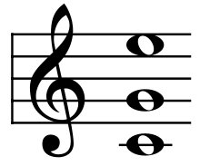

Harmony
- Harmony is often said to refer to the "vertical" aspect of music, as distinguished from melodic line, or the "horizontal" aspect.
- In popular and jazz harmony, chords are named by their root plus various terms and characters indicating their qualities.
- In many types of music, notably baroque, romantic, modern, and jazz, chords are often augmented with "tensions".
- A tension is an additional chord member that creates a relatively dissonant interval in relation to the bass.
- Typically, in the classical common practice period a dissonant chord (chord with tension) "resolves" to a consonant chord.
- Harmonization usually sounds pleasant to the ear when there is a balance between the consonant and dissonant sounds.
- In simple words, that occurs when there is a balance between "tense" and "relaxed" moments.
More about harmony
Paragraph here. Paragraph here. Paragraph here. Paragraph here. Paragraph here.